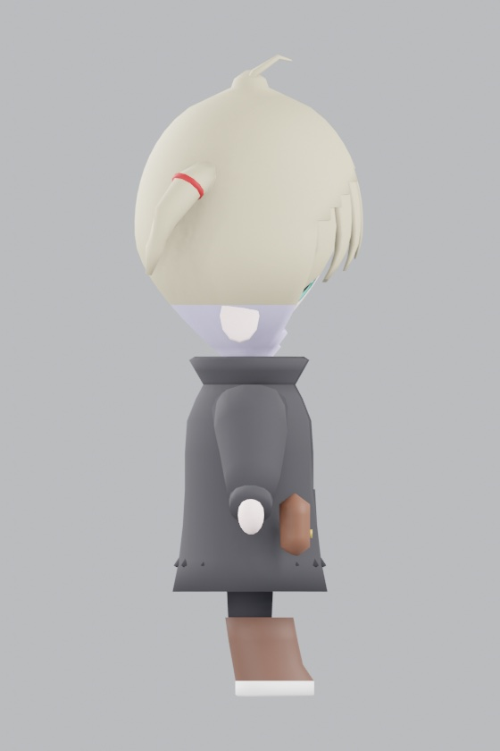
髪が円錐に尖る
症状 — 最初の生成。頭頂で髪が三角に尖った。
髪の半径を「その高さの頭の半径＋一定の浮き量」で求めていたのが原因です。 頭頂では頭の半径が0になるため、髪の半径が浮き量だけになって尖ります。 正しくは頭を一回り大きくした楕円体の、その高さでの半径を使います。
手でモデリングせず、Blenderを動かすPythonコードとして3Dキャラクターを作る
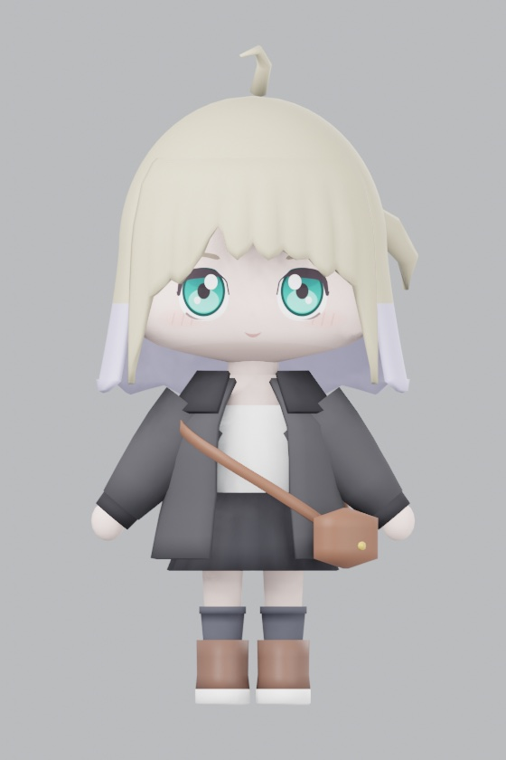
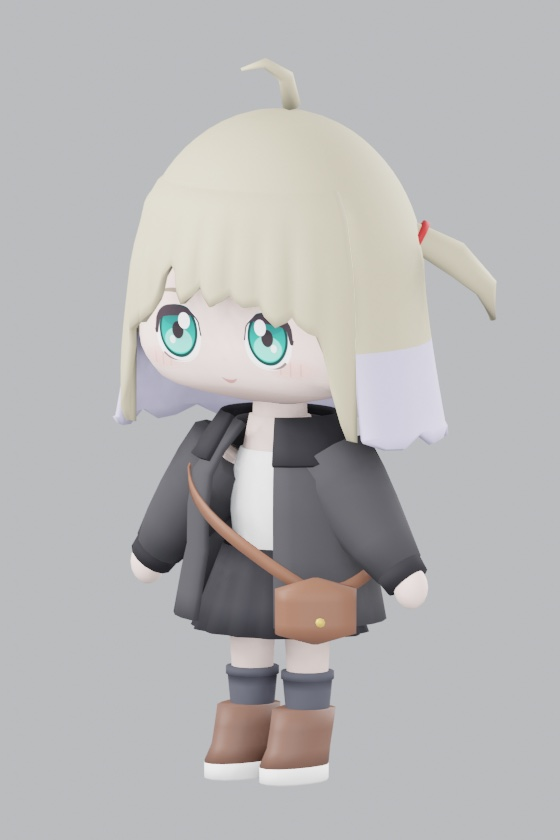
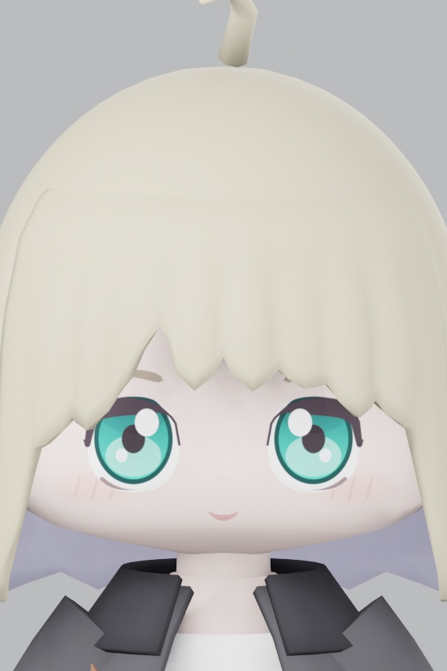
SDキャラクターの3Dモデルを、Blenderを一度も手で触らずに作った記録です。
モデルは .blend ファイルではなく生成するPythonコードとして存在し、
コマンド1本で実行するとメッシュ・顔テクスチャ・ボーンが組み上がり、
Unity向けのFBXまで書き出されます。
キャラクターの参考画像を用意し、Claude CodeでPythonコードを生成しました。 出てきたモデルをUnity上で確認し、「顎が尖りすぎ」「前髪が牙に見える」といった問題点を伝え、壁打ちしていきました。
手でモデリングすると、「頭をもう少し丸く」の一言が頂点の引き直しになります。
コードで持てば、それは数値を1行変えて再実行するだけになります。
実際このモデルは、顔の位置・髪の分け目・下着の形まで、すべて
pl_spec.py というデータファイルの数値で決まっています。
寸法・配色はすべて pl_spec.py に集約し、形を変えるときは原則このファイルだけを編集します。
メッシュを組む処理（pl_mesh.py）は「与えられた断面を積み上げる」ことだけを知っていて、
キャラクターの見た目については何も知りません。
あご・頭頂・目・口の高さは、頭の半径から導出します。 手打ちすると、頭の寸法を変えたときに顔だけが取り残されて静かにズレるためです。 実際に一度これで耳が足元に生成される事故が起きました（後述）。
4つのモジュールが、それぞれ独立した役割を持っています。
Blenderの自動ウェイトは、ボーンから離れた独立した塊を拾わずウェイト無し頂点を残すことがあります。 Unityの警告で気づくのでは遅いので、書き出し前にスクリプト内で全頂点のウェイトを検証しています。 同じ考え方で、境界辺（面が1つしか接していない辺）の数も毎回数え、穴がゼロであることを機械的に確認しています。
以下はすべて実際に出てきた中間状態です。 手でモデリングしていれば起きない種類の失敗が多く、 「見えている不自然さ」と「コード上の原因」が直感的に結びつかないところが、この作り方の難しさでした。

症状 — 最初の生成。頭頂で髪が三角に尖った。
髪の半径を「その高さの頭の半径＋一定の浮き量」で求めていたのが原因です。 頭頂では頭の半径が0になるため、髪の半径が浮き量だけになって尖ります。 正しくは頭を一回り大きくした楕円体の、その高さでの半径を使います。
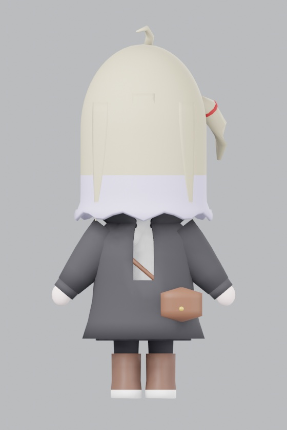
症状 — 顔を出すための開口部が、幅0のまま生成された。
補間関数のゼロ除算対策が原因でした。
max(edge1 - edge0, 1e-9) と書いていたため、
「高い位置から下がるほど1に近づく」という降順の指定をしたときに分母の符号ごと潰れ、
常に0を返していました。例外もエラーも出ず、ただ0が返るだけなので発見が遅れます。
同じバグが独立に2ファイルへ書かれていました。
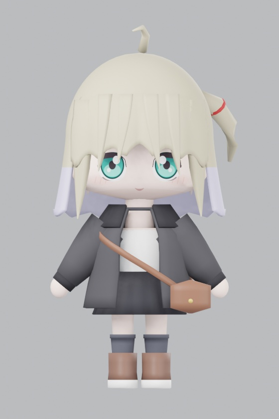
症状 — 毛束感を出そうとして、額に牙が並んだ。
毛束の区切りをシルエットの切り込みで表現したのが誤りでした。 加えて三角波を使っていたため、折れ点がそのまま輪郭の角になっていました。 切り込みを48mm→13mmに浅くし、波を余弦に変え、 毛束感は手前への張り出し（面の起伏）で出す方式に変更。 陰影の差として読まれるので、1枚のパーツのまま毛の流れを表現できます。
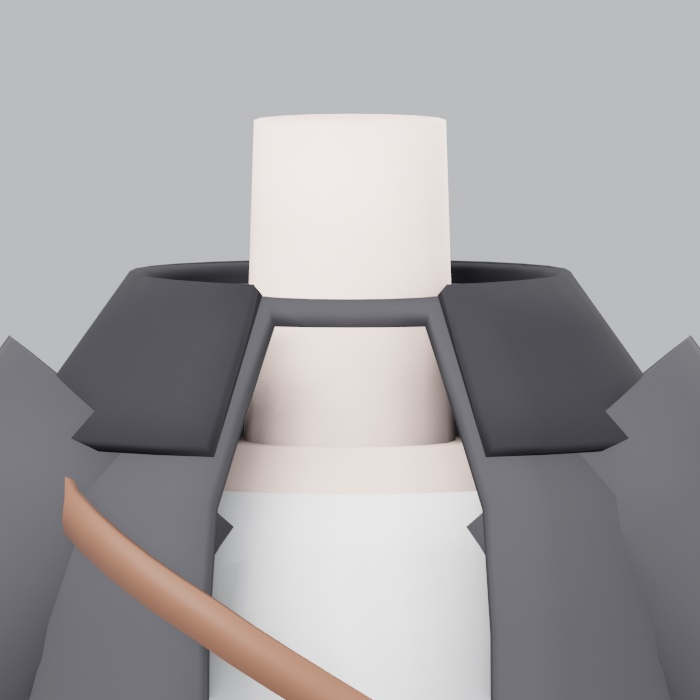
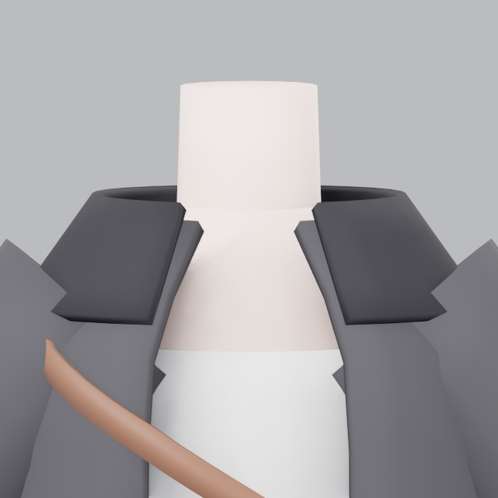
症状 — 首のまわりに、バケツの縁のような板が見える。
コートの首穴の扱いで3回失敗しました。 開けっ放しにすると真上からコートの内側が丸見えになり、 蓋をすると首を囲む板ができ、 首に密着させるとコートが首に貼り付いて見えます。 正解は「穴は首から離したまま、素体（肩）を穴の高さより上まで伸ばす」でした。 穴から覗くのが肌になるので、塞がなくても内側が見えません。
服に穴が開いていて中が見えるなら、蓋ではなく中身を作る。
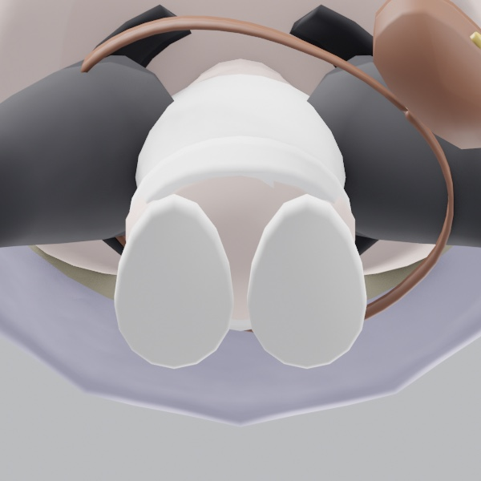
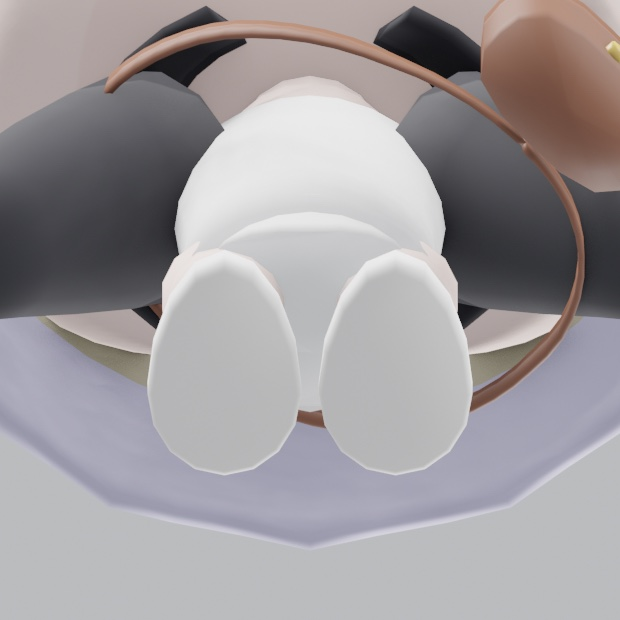
症状 — 正面・側面・背面では気づかない位置に、肌が覗く隙間が残る。
素体の胴の底面が平らな板で、それが下着の脚ぐりより下に出ていました。 正面ビューにはまったく写らないため、スカートを非表示にして真下から撮る確認を 別途行って初めて見つかりました。
穴は「見えない角度」にできる。プレビューの角度を増やすだけでなく、 境界辺を数えて機械的に検出するほうが確実。
症状 — 床の近くに白い破片が2つ浮いている。原因の見当もつかない。
顔パーツの高さを「あごから頭頂までの比」で持つよう改善した直後に起きました。
耳の定義が {"z": LEVEL["ear"]} と書かれていたのですが、
LEVEL["ear"] はファイル下部で導出される値で、
耳の定義時点ではプレースホルダの 0.0 でした。
Pythonは辞書リテラルをその場で確定させるため、あとで更新しても反映されません。
耳だけが原点＝足元に作られていました。
パーツごとのバウンディングボックスを出す使い捨てスクリプトで1分で特定できた。
原因不明の描画物は、まず「どのパーツか」を機械的に切り分けるのが速い。
以降、導出値が 0.0 のまま残っていたら例外を投げるガードを入れている。
この作り方で効いたのは、AIが自分の出力を見られることでした。 Blenderをヘッドレスで実行してレンダリング画像を書き出せるので、 Claude自身が結果を見て「前髪が板に見える」と判断し、次の修正へ進めます。 私が指摘したのは、そこから漏れた「印象」の部分です。
印象の言葉と原因が1対1で対応しないのが、この工程のいちばん難しいところでした。 「顔が下を向いている」は頭を傾けた覚えがないので原因を探しにくく、 実際には断面の取り方の問題でした。回転ではなく形状の問題だと気づくのに時間がかかっています。
実際に動いているコードをそのまま公開しています。
寸法データ（pl_spec.py）だけを読めば、
このキャラクターがどんな数値でできているかが分かるようにしてあります。
# 顔パーツの高さは、あご(0.0)から頭頂(1.0)までの比で持つ。
# 絶対値で持つと、頭の寸法を変えたときに顔だけ取り残されて位置がずれる。
# 比を小さくするほどパーツが下に寄り、額が広くなって幼い印象になる。
FACE_LEVEL_RATIO = {
"mouth": 0.138,
"eye": 0.300,
"brow": 0.468,
"ear": 0.196, # アニメ調では目より少し下
"nose": 0.216,
"blush": 0.196,
}def _HairShellRadius(a_z):
"""その高さでの髪の外側半径(x, y)。
「その高さの頭蓋の半径 ＋ 一定の浮き量」で求めてはいけない。
頭頂では頭蓋の半径が0になるため、髪の半径が浮き量だけになって円錐状に尖る。
正しくは **頭蓋を一回り大きくした楕円体** の、その高さでの半径を使う。
頭蓋の最大幅より下では、ボブは頭に沿わず真下へ落ちるので半径を一定に保つ。
"""def _BangWave(a_theta):
"""毛束の位置を表す 0..1 の波。1が毛束の中心、0が毛束の境目。
三角波（|frac*2-1|）を使うと折れ点がそのままシルエットの角になり、
深い切り込みと組み合わさって「牙の列」に見える。
余弦なら継ぎ目で傾きが0になるので、輪郭が滑らかにつながる。
"""生成スクリプト一式（Python / Blender 3.4.1 で動作確認）
切り分け用の使い捨てスクリプト
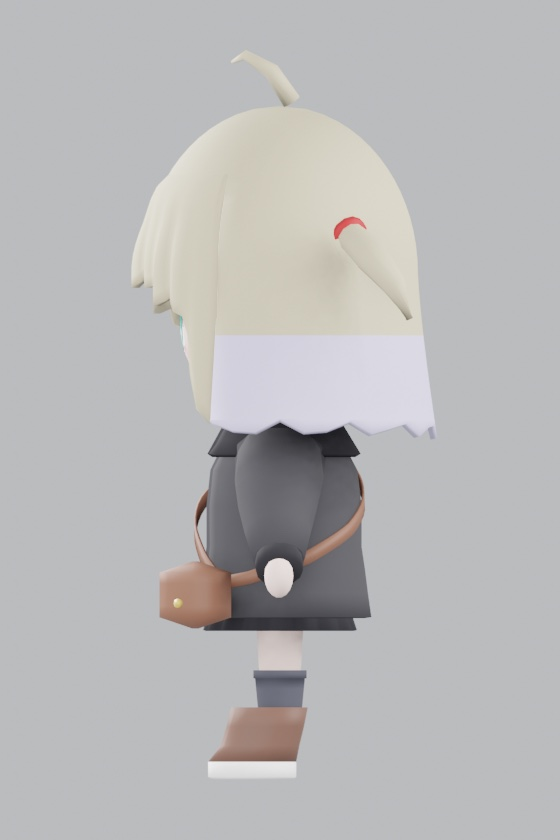
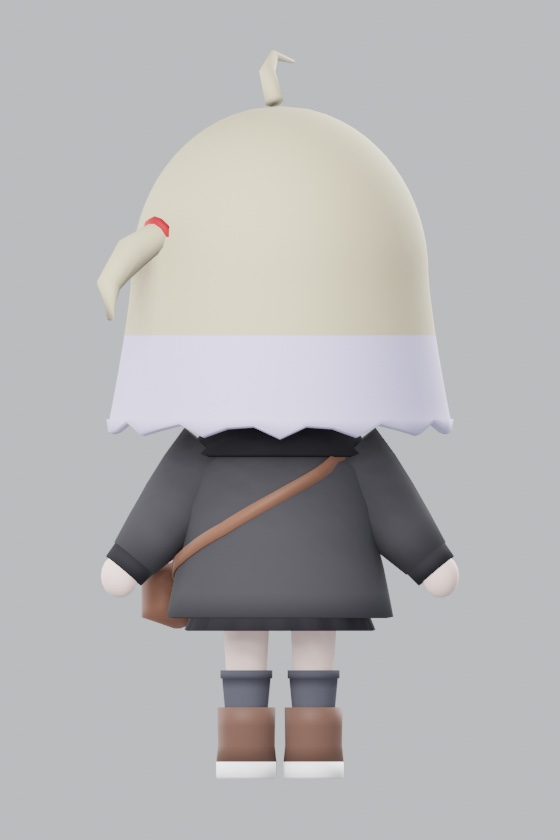
すべて生成スクリプトが自動で書き出したプレビューです。 正面・側面・背面に加え、俯瞰とあおりのビューを用意しています。 首元の板も下着の隙間も、正面・側面・背面には写らなかったためです。